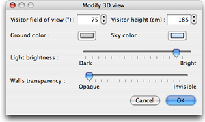

| Editing 3D view | |||
Choose 3D view > Aerial view or 3D view > Virtual visit to switch between the two points of view proposed in the 3D view.
When Aerial view is selected, the 3D view displays your home in 3 dimensions seen from a top point of view.
In this mode, moving the mouse to the left or to the right with its left button pressed makes the home turn around
a vertical axis located at home
center ; moving the mouse forward or backward with its left button pressed makes the home turn around an horizontal
axis ;
rolling the mouse wheel zooms in or out in the 3D view. When Virtual visit is selected, a virtual visitor seen from top is also drawn in home plan. Its location and its angle is updated simultaneously in plan and 3D view at each move of the visitor. This virtual visitor is surrounded by three indicators.
|


|
When the mouse pointer is upon one of the visitor shoulder, it changes to indicate you
can drag and drop that point to change the head or body angle of the visitor. While you press the mouse
button,
a tooltip
shows the value of the edited angle. Other attributes of the 3D view may be edited by choosing 3D view > Modify....  In the 3D view pane, you may change the virtual visitor field of view, its height, the ground and
sky (or ceiling) color, the light brightness and walls transparency. |
|